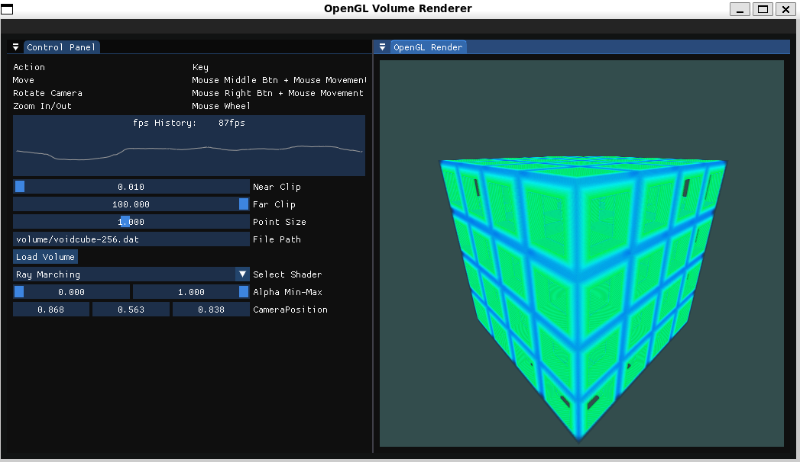
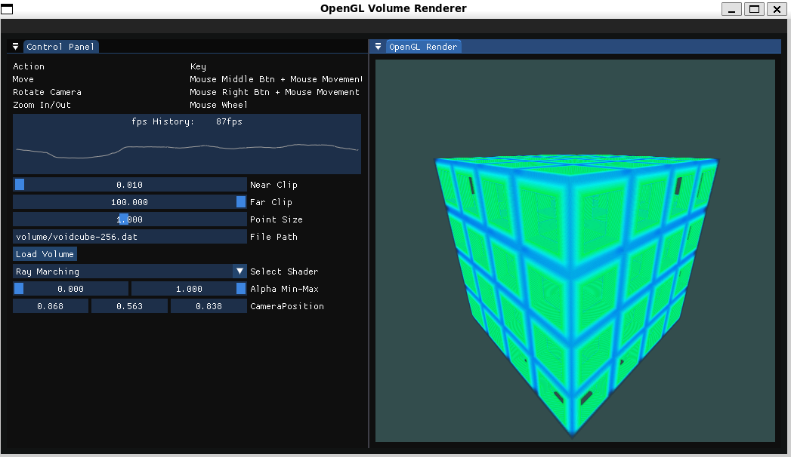

GLVolumeRenderer
GLVolumeRenderer is a rendering tool for visualizing NxNxN 3D binary volume data.
Wiki
Features
- Raymarching rendering mode
- Point cloud rendering mode
- Cross-section view using Near-Far Clip
- Filtering by volume density
- Volumetric Lighting
- Max-Intencity-Projection Rendering mode
Screenshots
 

The void cube volume data was created using SDF2Volume.
Installation and Execution Example
1. Clone the repository
git clone https://github.com/regusan/GLVolumeRenderer.git
cd GLVolumeRenderer
2. Preparing Dependencies
sudo apt-get update
sudo apt-get install libglew-dev libglfw3-dev libglm-dev
3. Build(Ubuntu)
cmake -S . -B build
cmake --build build -j
4. Run(Ubuntu)
./build/volumen volume/voidcube-256.dat
3. Build(WIndows)
cmake -S . -B build -DCMAKE_BUILD_TYPE=Release -DCMAKE_TOOLCHAIN_FILE=your/path
cmake --build build --target clean
cmake --build build --config Release
4. Run(WIndows)
./build\Release\volumen.exe NonShareVolume\256_256_256B.dat
Usage
- Right-click drag: Rotate view
- Mouse wheel: Zoom in/out
Third-Party Licenses
This project uses the following third-party libraries. Their licenses are as follows:
- GLEW (OpenGL Extension Wrangler Library)**Licensed under the MIT License.GLEW GitHub Repository
- **GLFW (Graphics Library Framework)**Licensed under the zlib/libpng License.GLFW GitHub Repository
- **GLM (OpenGL Mathematics)**Licensed under the MIT License.GLM GitHub Repository
- **IMGUI (Dear ImGui) Licensed under the MIT License. Dear ImGui GitHub Repository
- vcpkg(Windows Only)